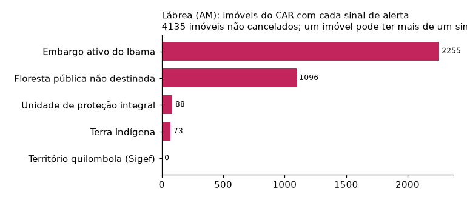
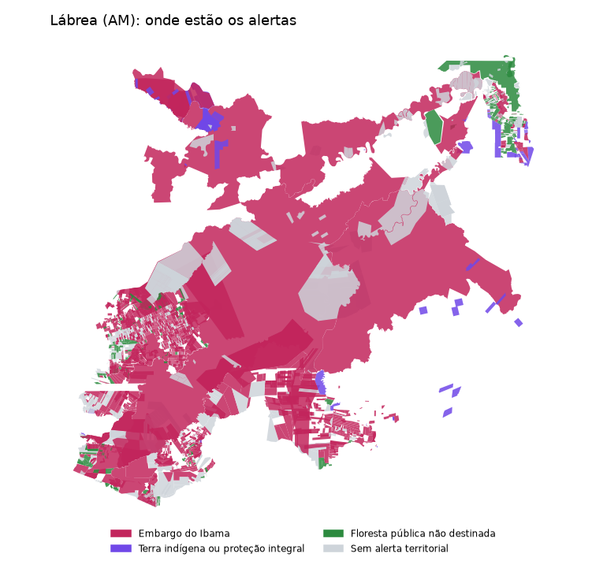
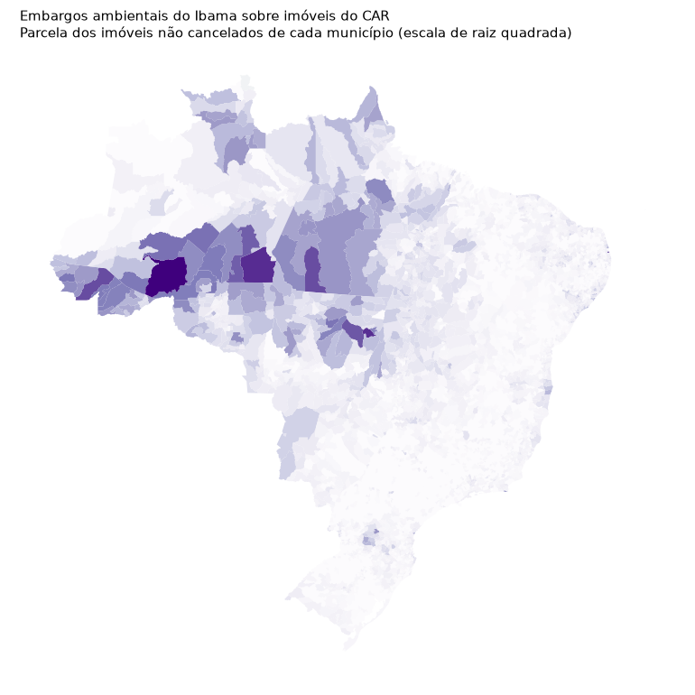
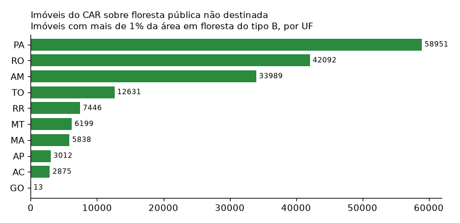

Triagem para crédito e conformidade¶
Antes de conceder crédito rural, o banco confere se o imóvel tem algum dos impedimentos sociais, ambientais e climáticos que o Manual de Crédito Rural lista (capítulo 2, seção 9). Vários deles são perguntas de mapa: o imóvel está sobre terra indígena? Sobre unidade de conservação? Tem embargo ambiental? Está em floresta pública que ainda não foi destinada?
O dono do imóvel faz essa conferência no Meu Imóvel Rural, um imóvel por vez. Este guia
mostra como fazê-la em lote, para uma carteira ou para um município inteiro, com
car_check() e car_quality().
Uma lista de imóveis de uma vez¶
car_check() recebe os códigos e devolve, para cada um, o que consta na camada pública e
um resultado: "ok", "attention", "blocked", "not_found" ou "invalid". A nota diz
o motivo em português.
import carbr
import matplotlib.pyplot as plt
labrea = carbr.car_properties("AM", municipality="Lábrea", geometry=False)
check = carbr.car_check(labrea["property_code"])
check["check"].value_counts()
for note in check.loc[check["check"] == "attention", "note"].head(4):
print(note)
Analisado, com notificação sem resposta do declarante.
Analisado, com notificação sem resposta do declarante.
Analisado, com notificação sem resposta do declarante.
Analisado, com notificação sem resposta do declarante.
Lábrea, no sul do Amazonas, foi escolhido de propósito: é um dos municípios com mais embargos do país. A consulta leva poucos segundos, porque lê só os blocos do município.
O que pesa em cada caso¶
A classificação junta vários sinais. car_quality() traz cada um em separado, por imóvel:
quality = carbr.car_quality("AM", municipality="Lábrea")
signals = pd.Series({
"Território quilombola (Sigef)": (quality["quilombola_share"] >= 0.01).sum(),
"Terra indígena": (quality["indigenous_share"] >= 0.01).sum(),
"Unidade de proteção integral": (quality["strict_protection_share"] >= 0.01).sum(),
"Floresta pública não destinada": (quality["public_forest_share"] >= 0.01).sum(),
"Embargo ativo do Ibama": (quality["embargo_count"] > 0).sum(),
})
ax = signals.plot.barh(color="#c2255c", figsize=(7, 3), width=0.7)
ax.bar_label(ax.containers[0], padding=3, fontsize=8)
ax.set_title(f"Lábrea (AM): imóveis do CAR com cada sinal de alerta\n"
f"{len(quality)} imóveis não cancelados; um imóvel pode ter mais de um sinal",
loc="left", fontsize=10)
ax.spines[["top", "right"]].set_visible(False)
fig("triagem-motivos")

No mapa, os mesmos sinais mostram onde o problema está dentro do município:
import numpy as np
shapes = carbr.car_properties("AM", municipality="Lábrea")
shapes = shapes[shapes["status"] != "cancelled"].merge(quality, on="property_code", how="left")
COLOURS = {"Embargo do Ibama": "#c2255c", "Terra indígena ou proteção integral": "#7048e8",
"Floresta pública não destinada": "#2b8a3e", "Sem alerta territorial": "#ced4da"}
shapes["signal"] = np.select(
[shapes["embargo_count"] > 0,
(shapes["indigenous_share"] >= 0.01) | (shapes["strict_protection_share"] >= 0.01),
shapes["public_forest_share"] >= 0.01],
list(COLOURS)[:3], default="Sem alerta territorial")
from matplotlib.patches import Patch
ax = shapes.plot(color=shapes["signal"].map(COLOURS), figsize=(7, 6.6), linewidth=0, alpha=0.85)
ax.legend(handles=[Patch(color=c, label=s) for s, c in COLOURS.items()], loc="upper center",
bbox_to_anchor=(0.5, 0.02), ncol=2, frameon=False, fontsize=8)
ax.set_title("Lábrea (AM): onde estão os alertas", loc="left")
ax.set_axis_off()
fig("triagem-labrea")

O país inteiro, por município¶
car_quality_summary() traz as contagens por município, prontas. Os totais:
towns = carbr.car_quality_summary()
towns[["properties", "embargoed", "public_forest", "strict_protection", "indigenous", "quilombola"]].sum()
Os embargos se concentram no arco do desmatamento:
import geopandas as gpd
brazil = gpd.read_file(
"https://servicodados.ibge.gov.br/api/v3/malhas/paises/BR?intrarregiao=municipio"
"&formato=application/vnd.geo%2Bjson&qualidade=minima")
brazil["municipality_code"] = brazil["codarea"].astype(int)
brazil = brazil.merge(towns, on="municipality_code", how="left")
brazil["share"] = np.sqrt(100 * brazil["embargoed"] / brazil["properties"])
ax = brazil.plot(column="share", cmap="Purples", figsize=(7, 7), linewidth=0,
missing_kwds={"color": "#f1f3f5"})
ax.set_title("Embargos ambientais do Ibama sobre imóveis do CAR\n"
"Parcela dos imóveis não cancelados de cada município (escala de raiz quadrada)",
loc="left", fontsize=10)
ax.set_axis_off()
fig("triagem-embargos")

top = towns.sort_values("embargoed", ascending=False).head(6)
top.assign(share=(100 * top["embargoed"] / top["properties"]).round(1))[
["state", "municipality", "properties", "embargoed", "share"]]
As florestas públicas não destinadas, as do "tipo B" do Cadastro Nacional de Florestas Públicas, são um fenômeno da Amazônia:
forests = towns.groupby("state")["public_forest"].sum()
forests = forests[forests > 0].sort_values()
ax = forests.plot.barh(color="#2b8a3e", figsize=(7, 3.4), width=0.75)
ax.bar_label(ax.containers[0], padding=3, fontsize=8)
ax.set_title("Imóveis do CAR sobre floresta pública não destinada\n"
"Imóveis com mais de 1% da área em floresta do tipo B, por UF", loc="left", fontsize=10)
ax.set_ylabel("")
ax.spines[["top", "right"]].set_visible(False)
fig("triagem-florestas")

O que a triagem cobre, e o que não cobre¶
Dos oito impedimentos do manual, cinco estão cobertos por inteiro: a situação do CAR, as terras indígenas (Funai), as unidades de conservação (CNUC/MMA), os embargos (Ibama) e as florestas públicas não destinadas (SFB).
Os territórios quilombolas entram em parte. O Incra retirou do ar em 2026 a camada completa, e o que usamos são os territórios já georreferenciados no Sigef. Um alerta de território quilombola é confiável; a falta dele não garante que o imóvel esteja fora de um.
Ficam de fora a supressão de vegetação nativa, que depende de autorizações sem cadastro público único, e o trabalho análogo à escravidão, que é uma lista de pessoas: esta base não tem dado pessoal.
Dois cuidados ao usar o resultado:
- os embargos são só os do Ibama; órgãos estaduais e o ICMBio também embargam;
- tudo parte de perímetros autodeclarados. O resultado é um sinal para a análise, não uma conclusão sobre o imóvel, e não substitui a consulta oficial.